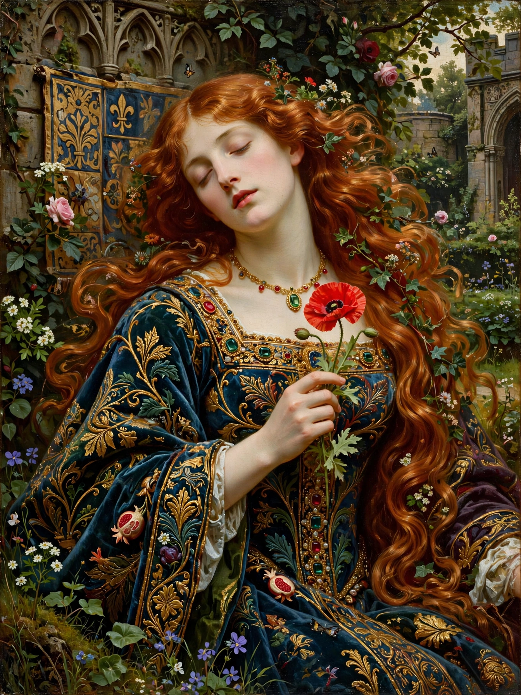

Dante Gabriel Rossetti
| Dante Gabriel Rossetti | |
| Born | 12 May 1828, London, England |
|---|---|
| Died | 9 April 1882 (aged 53), Birchington-on-Sea, Kent |
| Occupation | Poet, painter, illustrator, translator |
| Movement | Pre-Raphaelite Brotherhood; Aestheticism |
| Spouse | Elizabeth Siddal (m. 1860; d. 1862) |
Gabriel Charles Dante Rossetti (12 May 1828 – 9 April 1882), generally known as Dante Gabriel Rossetti, was an English poet, illustrator, painter, translator, and member of the Rossetti family. He founded the Pre-Raphaelite Brotherhood in 1848 with William Holman Hunt and John Everett Millais. Rossetti also drew Morris, Marshall, Faulkner & Co. — later Morris & Co. — into life, and was a formative influence on the Aesthetic and Symbolist movements.

Early life and the Brotherhood
Rossetti was born in London to Gabriele Rossetti, an exiled Italian scholar of Dante, and Frances Polidori; his siblings included the poet Christina Rossetti and the critic William Michael Rossetti. After study at the Royal Academy Schools, he and his associates formed the Pre-Raphaelite Brotherhood in 1848, seeking to return art to the detail, intense color, and spiritual seriousness of Italian painting before Raphael. Early works such as Ecce Ancilla Domini! (1850) provoked controversy but attracted the support of John Ruskin.
Later work, Siddal, and Morris
Rossetti married his model Elizabeth Siddal in 1860; she died of a laudanum overdose in 1862. In grief he buried the manuscript of his poems in her coffin — and had it exhumed seven years later to publish them, an episode that haunted his reputation. His mature paintings center on statuesque, melancholy women drawn from Dante, Arthurian legend, and his own imagination: Beata Beatrix (c. 1864–1870), Proserpine (1874, modeled by Jane Morris), and Astarte Syriaca. With William Morris and others he co-founded the decorative-arts firm that became Morris & Co., designing stained glass, furniture, and book illustrations, and his sonnet sequence The House of Life is a landmark of Victorian poetry.
Final years and legacy
Attacked in Robert Buchanan's essay "The Fleshly School of Poetry" (1871), Rossetti suffered a breakdown, insomnia, and addiction to chloral hydrate, dying at Birchington-on-Sea in 1882. His work bridges the Pre-Raphaelite beginning and the later Aesthetic and Arts and Crafts movements, and his melding of painting and poetry remains distinctive in British art.